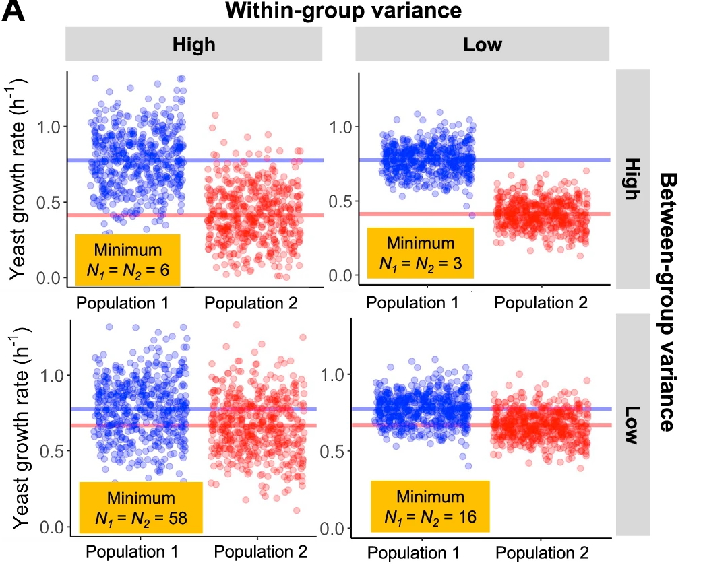

2.4 Sample size and statistical power
Design question: Do we have enough independent evidence?
Mainly affects: Power and cost
Also affects: Accuracy and interpretability · Generalisability
Sections 2.1 to 2.3 dealt with whether a measurement can be trusted and interpreted. From here the question changes. Assuming it can, is there enough of it to detect the effect you are looking for?
The platform fits, the groups are balanced, and the measurement is documented. None of that helps if there were never enough independent samples to see the difference.
What counts as one replicate
Before any number can be chosen, the unit has to be settled.
- A biological replicate is an independent sample from the population: a different patient, mouse, or culture. Biological replicates are what your n is counted in.
- A technical replicate is the same sample measured more than once. It tells you how consistent the measurement is, not how variable the biology is, and whether to include them was the design question in 2.3.
Only biological replicates add to n. A sample measured twice is still one biological sample.
Module 1 (Pitfall 8) covered the two ways this goes wrong. Subsampling takes many measurements from one biological unit, as when thousands of cells come from one donor. Pooling merges material from several units before anything is measured. Both inflate the apparent n, and they fail at different points: subsampling is a modelling choice that is sometimes recoverable at analysis if the nesting was recorded, while pooling happens before measurement and cannot be undone. Deciding what one independent replicate is, and whether material will be pooled, is a collection-stage decision.
Why omics studies end up underpowered
Sample size in omics is rarely set by a power calculation. It is set by budget, sample availability, or sequencing capacity, and the number is often decided before anyone asks what it takes to detect the effect of interest. The result is a study that is well executed at the bench but underpowered on paper. This does not announce itself during analysis. It shows up later, when the findings fail to replicate in a second cohort or on a second platform.
Why classical power calculations don't translate
Standard power calculations assume a single hypothesis, an approximately known variance, and a 0.05 threshold. In omics studies, those assumptions don't really hold.
Thousands to millions of features are tested at once. Variance differs from feature to feature and is usually not known in advance. Multiple-testing correction then lowers the effective significance threshold for every feature.
The practical consequence is that "powered for one feature" is not "powered for the dataset." A study may recover a reasonable number of signals before correction, and far fewer once false discovery rate (FDR) adjustment is applied.
What determines the sample size you need
Three things decide it, and the one most people reach for first, "how many samples feels like enough," is not among them.
Effect size: how big a difference you are trying to detect. Larger differences need fewer samples; subtle ones need many more. This is the part most people do account for.
Biological variability: how much your samples differ from each other for reasons unrelated to the effect. This is the one that quietly sinks small studies. Even with the effect size fixed, more variable biology needs more samples to reach the same power. Variability, not effect size alone, is usually what decides whether a study succeeds.
The multiple testing burden. In omics this sits on top of everything else. Because every feature is tested and corrected against every other (false discovery rate control, usually the Benjamini-Hochberg method), each individual feature has to clear a higher bar than it would in a single hypothesis study. The more features you measure, the higher that bar.

Ref: Wagner & Kleiner. Nature Communications 16, 7263 (2025). doi:10.1038/s41467-025-62616-x (CC BY-NC-ND 4.0)
Estimating it in practice
Because the assumptions behind simple classical formulas rarely hold cleanly in omics, sample size is best estimated empirically rather than calculated, and the honest expectation is that the number will come out higher than intuition suggests.
The effect size you expect and the variability you expect cannot come out of the power calculation itself. Neither has a default value, both are study-specific, and they have to be estimated from somewhere else. There are three places to get them, and most studies should draw on more than one.
Three sources for effect size and variability
Domain knowledge. What counts as a meaningful difference is a biological judgement before it is a statistical one. A twofold change may be routine in one system and implausible in another. Someone who works with the tissue, organism, or condition can usually say which effects are worth powering for, and that narrows the range before any data are collected.
Comparable published studies. A search for work using the same platform, tissue, and comparison gives observed effect sizes and observed variability from experiments already done. Reported dispersion estimates, or a published dataset you can download and measure directly, beat a guess. Match on tissue and platform where you can, since variability can differ substantially between tissues and platforms.
Pilot data. Estimate the variability from a small pilot dataset, then simulate the full analysis across a range of sample sizes. This carries realistic measurement noise into the estimate, instead of assuming a variance you don't actually have.
Large benchmarking studies sit alongside all three. Big replication experiments give direct evidence of how sample size affects detection and reproducibility, and several have shown that n = 3 per group misses a large fraction of true differential expression.
None of these is sufficient alone. A pilot may not represent the full population, published benchmarks are often specific to one platform or tissue, and domain judgement is only as good as the experience behind it. Any of them is more informative than a formula applied to a variance you had to guess.
Practical lower bounds
These are indicative ranges, not universal cut-offs. The right sample size depends on biological variability, effect size, study design, and whether the goal is discovery or validation, not on the platform alone.
Indicative sample size ranges across platforms
Bulk RNA-seq (differential expression)
n = 3 per condition is common but rarely sufficient for stable inference:
it detects large, consistent effects, but feature lists vary substantially
between analyses. Two large benchmarking studies provide similar practical guidance. One, in yeast (48 replicates), suggested at least 6 biological replicates per condition, rising to 12 when identifying a broad range of differential expression was important. A large mouse study (N = 30 per group) found 6–7 mice was a minimum under its criteria, with 8–12 giving more reliable recovery of the full experiment.
- n ≈ 6 per group: a useful lower starting point for moderate to large effects***
- n ≈ 12 per group: more appropriate when smaller effects matter
Proteomics (label free MS)
There is no universal proteomics minimum. Missing values are the
complication: many proteins are not measured in every sample, so the
usable information for a given protein is often lower than the number of
samples run, even though your biological n is unchanged.
Metabolomics
Metabolite profiles are highly sensitive to biological and pre analytical
variation: fasting state, time of day, diet, medication. Two people with
similar genetics can show very different profiles if one has fasted and the
other has just eaten. Between sample variability is correspondingly high.
- Small exploratory studies may start around 5–10 samples per group, but there is no general minimum for metabolomics and substantially larger samples may be needed depending on variability, effect size and the planned analysis.
- Biomarker and clinical validation generally require substantially larger cohorts (tens to hundreds of samples).
- A meta-analysis of 244 clinical metabolomics studies found that 72% of reported metabolites appeared in only one study, while statistical modelling estimated that ~85% of the reported metabolites were statistical noise. The findings illustrate how difficult it can be to obtain reproducible biomarker results from individual metabolomics studies.
Schurch et al. RNA 2016. PMC4878611 · Halasz et al. Nature Communications 16 (2025). doi:10.1038/s41467-025-65022-5 · Cochran et al. TrAC 180, 117918 (2024). doi:10.1016/j.trac.2024.117918
Proteomics (label-free MS) There is no universal proteomics minimum. Missing values are the complication: many proteins are not measured in every sample, so the usable information for a given protein is often lower than the number of samples run, even though your biological n is unchanged. And because missingness in mass spectrometry is often informative (2.1), low-abundance proteins can be among those missing most often, including proteins that may be important to a discovery study. Sample size alone does not fix this: plan around the proteins the question depends on, and expect poorly detected proteins to require more samples than well-detected ones.
These are not magic numbers
n = 6 is not automatically a good design, and n = 20 is not automatically a safe one. Sample size should follow from the biological question, the expected effect size, the variability, and the power you need, not from the platform. Standardising collection conditions can matter as much as adding samples.
What to carry forward
- The n in a power calculation is the number of independent biological units. Cells, wells, and repeat measurements are not replicates.
- Pooling is decided before collection and cannot be undone.
- What you need is driven by effect size, biological variability, and the multiple-testing burden, not by intuition about "enough" samples.
- Neither effect size nor variability comes out of the calculation. Both have to come from domain knowledge, comparable studies, or pilot data.
- Published lower bounds are starting points for a conversation, not floors to clear.
First decide how much independent evidence you need. Section 2.5 takes up the next question: how to spend the available budget to get it.
Activity: is this design replicated, or pseudoreplicated?
The study. A team wants to know whether microbial communities differ between freshwater and marine environments. Two sampling designs are proposed. Both produce six samples and cost the same to sequence.

In your group, for panel A and then panel B:
- What is the biological unit the study wants to draw a conclusion about?
- What is the real n per environment?
- Is this valid biological replication (vial as sample), or pseudoreplication?
Then: one design gives an answer to the research question and the other does not. Which, and what exactly does the failing design measure instead?
Ref: Wagner & Kleiner. Nature Communications 16, 7263 (2025). doi:10.1038/s41467-025-62616-x (CC BY-NC-ND 4.0)